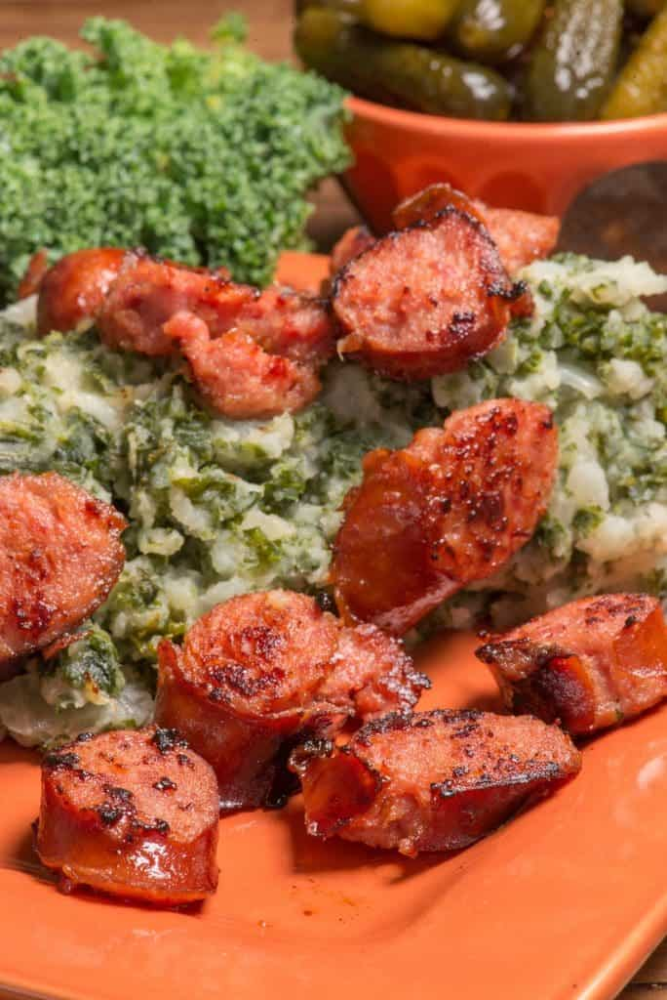

Mashed Potatos with Sausage

Description
Stamppot met Worst, or Mashed Potatoes with Sausage, is a quintessential Dutch comfort food that warms the heart and soul, especially during the cold winter months. At its core, the dish combines creamy mashed potatoes with hearty vegetables, often kale or endive, creating a delightful medley of flavors and textures. Accompanied by a robust smoked sausage, typically the Dutch "rookworst," this dish embodies simplicity and tradition. It's a testament to how basic ingredients, when combined thoughtfully, can produce a meal that is both filling and incredibly satisfying.
In the Netherlands, Stamppot met Worst is not just a dish; it's a beloved cultural staple. Families have passed down their unique versions of the recipe for generations, tweaking and perfecting it along the way. Whether enjoyed at a cozy family gathering or in a traditional Dutch restaurant, this meal is sure to evoke a sense of nostalgia and homeyness.
Ingredients
- 4-5 large potatoes, peeled and quartered
- 300g of kale or endive, finely chopped
- 1 Dutch rookworst (smoked sausage)
- 1 onion, finely chopped
- 50ml milk
- 25g butter
- Salt and pepper to taste
- 1 tablespoon of vinegar or mustard (optional)
Steps
- Start by placing the peeled and quartered potatoes in a large pot, covering them with water. Add a pinch of salt and bring to a boil.
- Cook the potatoes until they are tender, which usually takes about 15-20 minutes.
- In another pot, boil the finely chopped kale or endive until they are soft, then drain the excess water.
- While the vegetables are cooking, in a separate pan, fry the finely chopped onion until it's translucent and golden.
- Once the potatoes are done, drain them and return them to the pot.
- Add the butter and milk to the potatoes and mash until smooth and creamy.
- Mix in the cooked kale or endive and fried onions, stirring until everything is well combined.
- Season the mixture with salt, pepper, and optionally, a touch of vinegar or mustard for extra flavor.
- In a separate pan or pot, heat the rookworst according to its packaging instructions.
- Serve the mashed potato and vegetable mixture on plates, topped with slices of the warm smoked sausage.
- Enjoy your hearty and traditional Dutch meal!